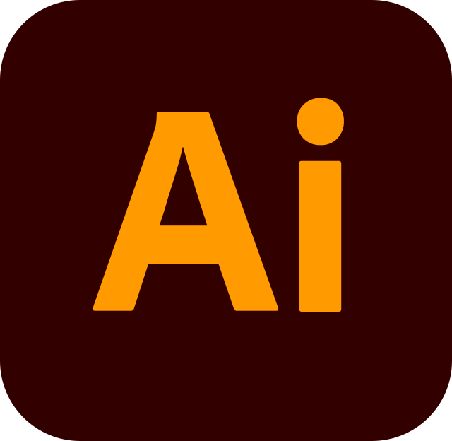

''Про мене''
Мене звати Андрій Кушнір. Ось трохи інформації про мене:
Мені 15 років. Я народився 25 липня 2008 року. Я маю неповну середню освіту - закінчюю 10 клас Спеціалізованої Фізико-математичної школи імені Володимира Вернадського.
За час навчвння в академії ШАГ я вивчив початковий рівень таких дисциплін як:
- Python
- Arduino
- Photoshop
- Adobe Illustrator
- Blender
Python
Python — інтерпретована об'єктно-орієнтована мова програмування високого рівня із суворою динамічною типізацією. Розроблена в 1990 році Гвідо ван Россумом.
Arduino
Arduino — апаратна обчислювальна платформа для аматорського конструювання, основними компонентами якої є плата мікроконтролера з елементами вводу/виводу та середовище розробки Processing/Wiring на мові програмування, що є спрощеною підмножиною C/C++.
Photoshop
Adobe Photoshop — графічний редактор, розроблений і поширюваний фірмою Adobe Systems. Цей продукт є лідером ринку в галузі комерційних засобів редагування растрових зображень і найвідомішим продуктом фірми Adobe. Часто цю програму називають просто Photoshop.

Adobe Illustrator
Adobe Illustrator — професійний графічний редактор для створення та редагування векторної графіки від компанії Adobe. Спочатку програму було створено для Apple Macintosh, розробка почалася 1985 року.
Blender
Blender — програмний пакет для створення тривимірної комп'ютерної графіки, що включає засоби моделювання, анімації, рендерінгу, після-обробки відео. До версії 2.80 містив рушій Blender Game Engine для створення відеоігор. Пакет є вільним програмним забезпеченням та розповсюджується під ліцензією GNU GPL.